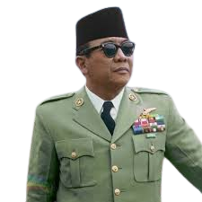
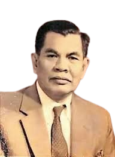
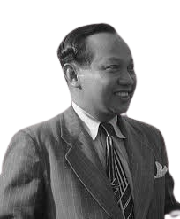

PANDANGAN

PANDANGAN IR. SOEKARNO
1. Kebangsaan Indonesia (Nasionalisme):
Kebangsaan Indonesia mencerminkan pentingnya persatuan dan kesatuan dalam kerangka negara-bangsa. Soekarno menekankan bahwa Indonesia harus menjadi negara yang berdiri di atas semangat kebangsaan, di mana semua rakyat dari berbagai latar belakang suku, agama, dan budaya bersatu sebagai satu bangsa yang utuh.
2.Internasionalisme atau Perikemanusiaan (Humanisme):
Prinsip ini mengajarkan bahwa bangsa Indonesia harus menjadi bagian dari dunia yang lebih luas dan menghormati hak-hak asasi manusia serta berkontribusi terhadap perdamaian dunia. Internasionalisme tidak berarti meninggalkan kebangsaan, tetapi melengkapinya dengan semangat kemanusiaan yang universal.
3.Mufakat atau Demokrasi:
Soekarno mengusulkan demokrasi berdasarkan musyawarah untuk mencapai mufakat sebagai metode pengambilan keputusan. Ini berarti bahwa pemerintahan harus didasarkan pada kehendak rakyat, yang diwakili melalui musyawarah dan konsensus, bukan melalui paksaan atau dominasi kelompok tertentu.
4.Kesejahteraan Sosial:
Prinsip ini menekankan bahwa negara harus berperan aktif dalam meningkatkan kesejahteraan rakyatnya. Soekarno menginginkan ekonomi Indonesia dibangun di atas prinsip-prinsip keadilan sosial, di mana kekayaan negara didistribusikan secara merata dan tidak ada kesenjangan sosial yang besar di antara rakyat.
5.Ketuhanan yang Maha Esa:
Soekarno menegaskan bahwa bangsa Indonesia harus mengakui dan menghormati keberadaan Tuhan Yang Maha Esa. Prinsip ini mencakup pengakuan terhadap agama-agama yang ada di Indonesia, serta menjunjung tinggi nilai-nilai religius dalam kehidupan berbangsa dan bernegara.

PANDANGAN MR. MUHAMMAD YAMIN
Peri Kebangsaan:
Yamin menekankan pentingnya kesadaran nasionalisme sebagai landasan dasar negara. Peri kebangsaan berarti kesetiaan kepada bangsa dan tanah air, serta membangun identitas nasional yang kuat sebagai satu bangsa yang merdeka dan berdaulat.
Peri Kemanusiaan:
Prinsip ini mencerminkan penghormatan terhadap hak-hak asasi manusia dan nilai-nilai kemanusiaan universal. Peri kemanusiaan menuntut perlindungan dan penghormatan terhadap martabat setiap individu, tanpa memandang latar belakang etnis, agama, atau golongan.
Peri Ketuhanan:
Usulan Yamin mengakui pentingnya nilai-nilai religius dalam kehidupan berbangsa dan bernegara. Peri ketuhanan menekankan bahwa dasar negara harus mencerminkan penghormatan terhadap keyakinan spiritual rakyat Indonesia.
Peri Kerakyatan:
Ini berarti pemerintahan harus didasarkan pada kedaulatan rakyat. Rakyat adalah sumber utama kekuasaan, dan semua keputusan negara harus mengacu pada kehendak dan aspirasi rakyat, yang diwujudkan melalui sistem demokrasi.
Kesejahteraan Rakyat:
Yamin menekankan bahwa negara harus berperan dalam menjamin kesejahteraan seluruh rakyatnya. Negara harus memastikan bahwa sumber daya dan kekayaan alam digunakan untuk kemakmuran bersama, menghilangkan kemiskinan, dan meningkatkan taraf hidup rakyat.

PANDANGAN DR.SOEPOMO
Persatuan:
Soepomo memandang persatuan sebagai elemen kunci dalam membangun negara yang kuat dan stabil. Negara harus menciptakan kesatuan di antara berbagai elemen masyarakat, tanpa memecah-belah berdasarkan perbedaan etnis, agama, atau kelas sosial.
Kekeluargaan:
Prinsip ini menggambarkan hubungan antara pemerintah dan rakyat sebagai hubungan yang harmonis seperti dalam sebuah keluarga. Negara harus berfungsi sebagai pelindung dan pengayom bagi seluruh rakyat, dengan semangat gotong royong dan kerjasama.
Keseimbangan Lahir Batin:
Soepomo menekankan pentingnya keseimbangan antara aspek material (lahir) dan spiritual (batin) dalam kehidupan bernegara. Negara harus mengakomodasi kebutuhan jasmani dan rohani rakyatnya, serta menjaga harmoni antara kemajuan fisik dan spiritual.
Musyawarah:
Musyawarah dalam pandangan Soepomo adalah cara untuk mencapai keputusan bersama yang mencerminkan kehendak kolektif rakyat. Musyawarah dilakukan dengan semangat kekeluargaan dan tanpa paksaan, sehingga keputusan yang diambil dapat diterima oleh semua pihak.
Keadilan Sosial:
Negara harus menciptakan keadilan sosial bagi seluruh rakyatnya. Ini berarti memastikan bahwa tidak ada kesenjangan sosial yang besar, serta setiap warga negara mendapatkan kesempatan yang adil dalam berbagai aspek kehidupan, termasuk ekonomi, pendidikan, dan kesehatan.
KONTAK
Designed By : BANGKIT HAQI ALIAFFUAN/05/X-RPL